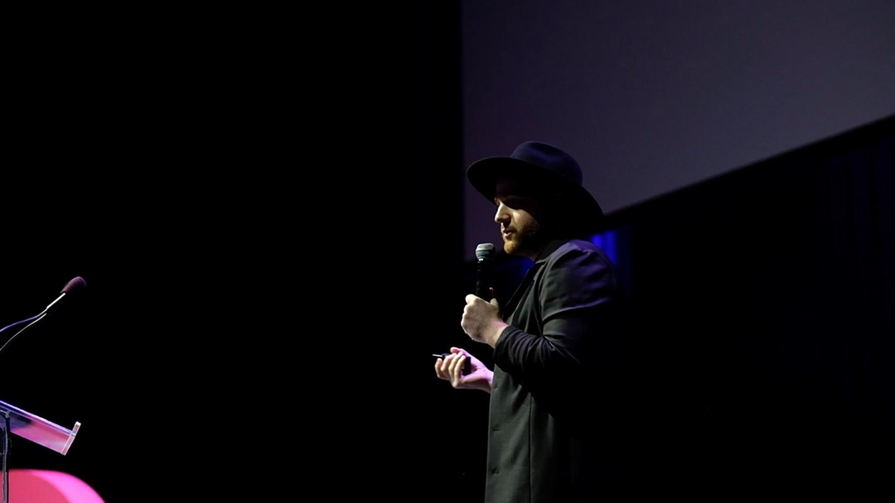

Good People
I’m a product designer, researcher, and engineer living in Brooklyn, NY. I value human connection, perpetual learning, and metaphors that guide our everyday interactions.
I believe products are in service of people. It is our job to make sure they are accessible and inclusive for anyone to use.
I’m currently building a few things of my own — an open-source project around sensible screen-based media type scales, a series of enamel pins and prints, and a mechanical keyboard key set that will be for sale this Fall/Winter. Previously, I built tools for design teams at InVision, designed enterprise software at IBM, and prototyped apps for people at work with Apple. In 2014, I founded the Make Lab with a co-worker in Austin, TX.
I enjoy meeting new people. If you find yourself in one of the five boroughs and would like to meet up for a tea, coffee, or snack, please reach out on Twitter!
